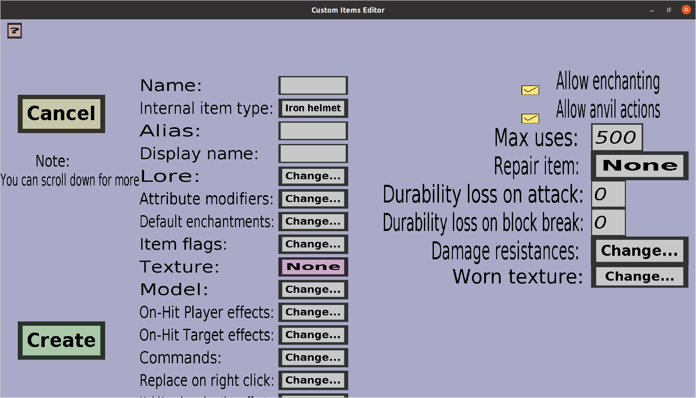

The armor edit menu can be used to modify or create pieces of custom armor (helmet, chestplate, leggings or boots). If you just started creating a new helmet, it should look like this:
This menu has everything the tool edit menu has, but an additional 'Change...' button for the 'Damage resistances' and edit fields for the leather color if you are using a leather armor piece as internal item type.
Unfortunately, it's currently not possible to change the worn armor texture/model. The 'Texture' of custom armor only affects the texture in the inventory. For custom helmets, support for custom worn models will be added to this plug-in in the future. For the other armor pieces, it seems simply impossible due to current minecraft limitations. Using a leather color is currently the best you can get: it's not great, but you can pick leather armor with any color you like, which is already much better than only the choice between diamond, gold, iron, chainmail and leather.
The damage resistances can be used to give players (or mobs) wearing this piece of custom armor extra protection against specific damage causes (for instance against lava damage). To change the damage resistances of this piece of armor, click on the 'Change...' button on the right of 'Damage resistances:', which should take you to the damage resistances edit menu.
When the internal item type of the armor piece you're editing is made of leather, you should see text edit fields for the 'Red', 'Gree' and 'Blue'. These together determine the dye color that will be used for the worn leather armor piece model. They must be integers that are at least 0 and at most 255. You can take any combination of red, green and blue to configure the dye color you want (you are not restricted to the 16 dye colors of minecraft).
The worn texture is the texture that will be shown on the bodies of players who equip the custom armor piece. Clicking the 'Change...' button will take you to the worn armor texture menu, where you can choose which worn texture to use.